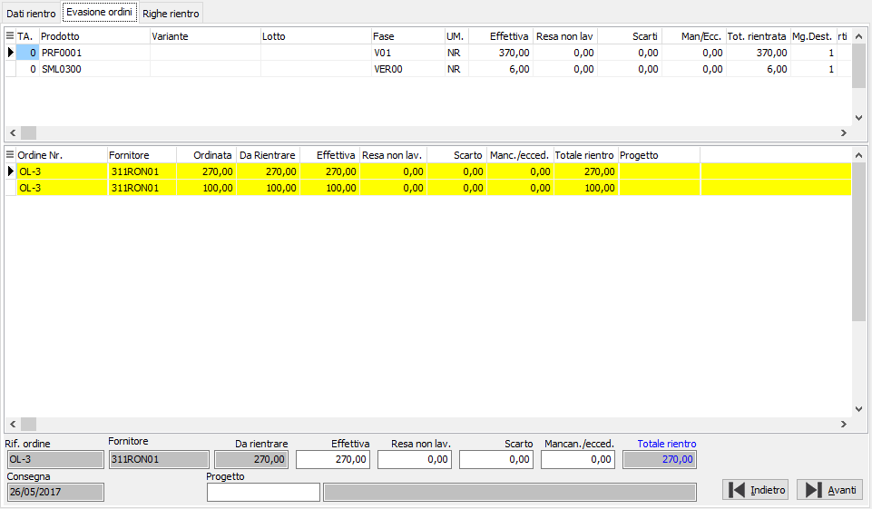
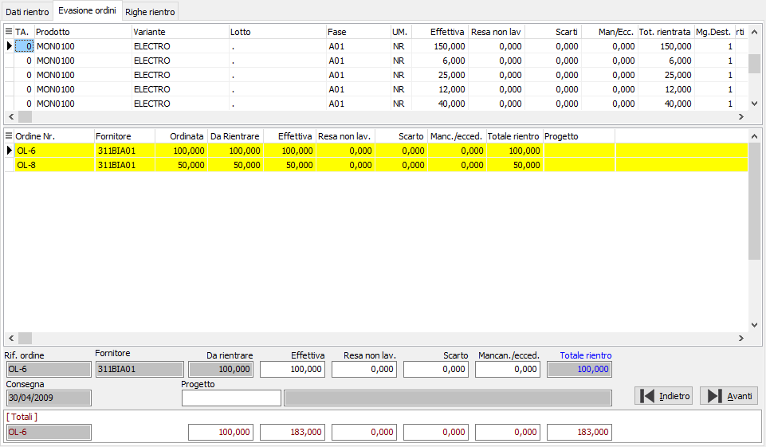

Evasione ordini
Sulla base quindi delle quantità che l’operatore ha specificato vengono evasi gli ordini aperti tramite questa finestra; la finestra video è suddivisa in tre sezioni: la sezione superiore riporta sinteticamente le righe della pagina precedente; la sezione centrale contiene la griglia in cui vengono visualizzati gli ordini; la sezione inferiore contiene il pannello di input che consente di inserire le quantità per l'evasione. Al momento in cui si accede alla pagina la procedura ha già fatto una preselezione degli ordini eventualmente presenti effettuando l'evasione delle quantità in concorrenza (inizio ad evadere il secondo ordine dopo che ho evaso completamente il primo) in ordine di data consegna.

I campi presenti nel pannello di input, oltre al riferimento ordine, al fornitore, alla data di consegna ed eventualmente alla commessa di produzione (se configurata la gestione), sono le stesse quantità che abbiamo trattato nella sezione Dati di rientro.
Se previsto in configurazione il rientro a fronte di Ddt di carico, la finestra mostra per ogni riga di DDT di carico la parte di ordine evasa; dato che più righe di rientro possono evadere lo stesso ordine, in basso sotto i dati dell'ordine è riportato un pannello contenete ii valori totali relativi all'ordine.

la pressione sul pulsante oppure del tasto Annulla sulla toolbar o del tasto ESC consente, previa richiesta di conferma, di annullare le selezioni degli ordini fatte fino ad ora e tornare alla sezione precedente per effettuare correzioni e rielaborare gli ordini.
la pressione sul pulsante oppure del tasto Salva sulla toolbar o del tasto F10, consente di accedere alla sezione relativa all'evasione degli ordini.